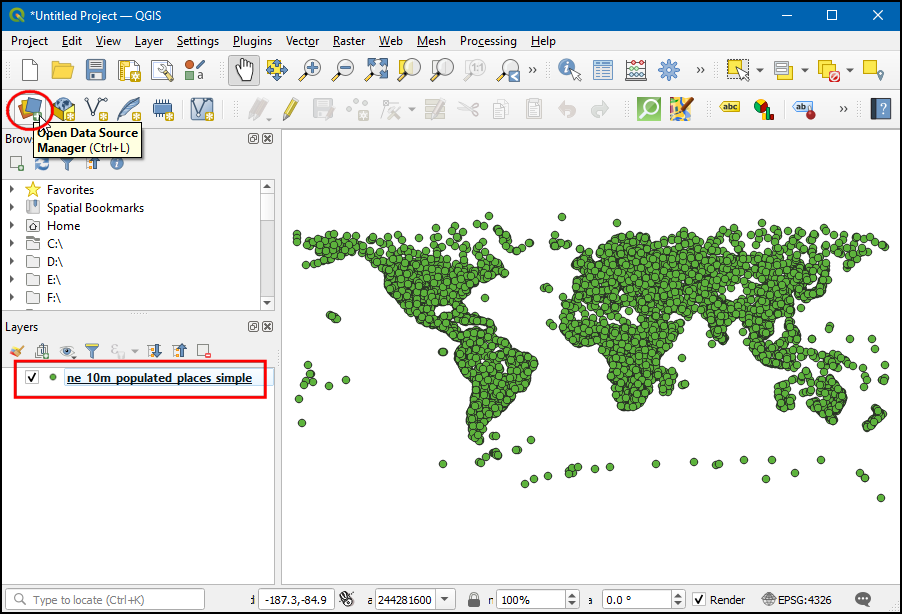
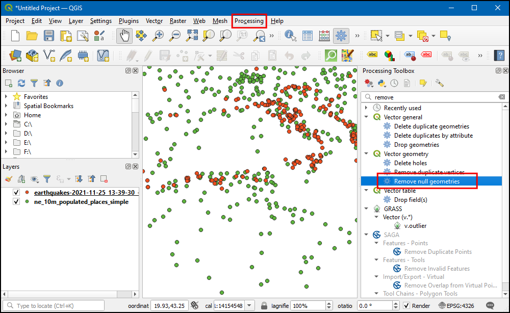
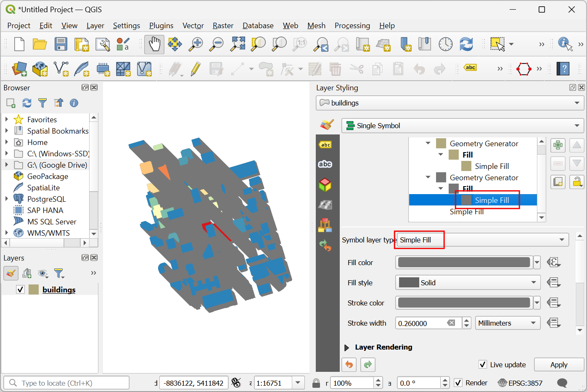
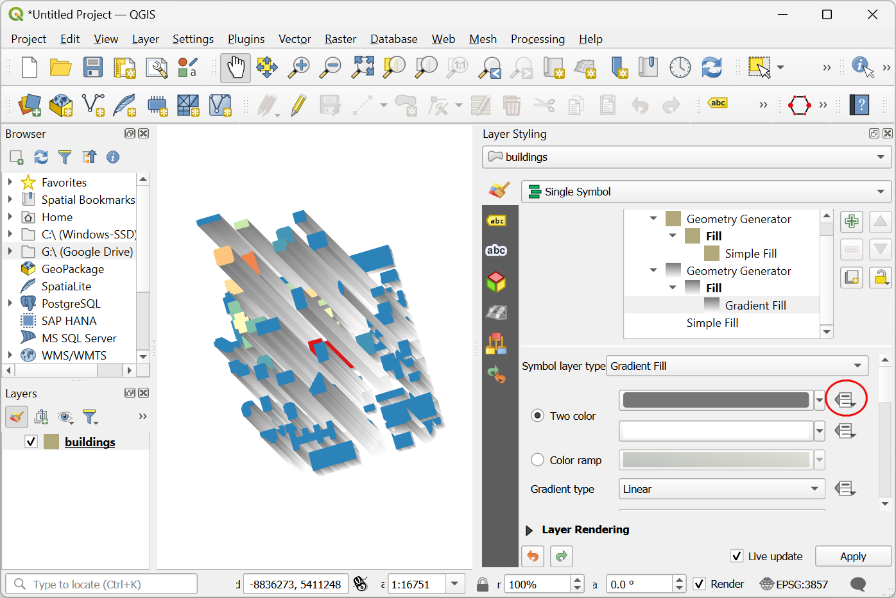

Nearest Neighbor Analysis (QGIS3)¶
GIS is very useful in analyzing spatial relationship between features. One such analysis is finding out which features are closest to a given feature. There are multiple ways to do this analysis in QGIS. You can do a spatial join using the Join Attributes by Nearest or get the distances to all features from another layer using the Distance Matrix tool from the Processing Toolbox. In this tutorial, we will explore a tool named Distance to nearest hub from the Processing Toolbox that can not only find the distance to the closest feature but join it with a line to it for visualizing the results.
Overview of the task¶
Given the locations of all known earthquakes between years 1900 and 2000, find out the nearest populated place for each location where the earthquake happened.
Get the data¶
For this tutorial we will download a dataset of earthquakes between 1900-2000 from NOAA’s National Geophysical Data Center produces a great dataset of all significant earthquakes since 2150 BC. Visit the NOAA NCEI portal and enter Min as
1900and Max as2000. This will return all earthquake incidents that occurred and were recorded by NOAA between those years. For other specific results, you can filter with different parameters. Click Search.

As a result, we got 2585 earthquake incidents. Click on the Download TSV icon.

Natural Earth has a nice Populated Places dataset. Download the simple (less columns) dataset
For convenience, you may directly download a copy of both the datasets from the links below:
earthquakes_2021_11_25_14_31_59_+0530.tsv
ne_10m_populated_places_simple.zip
Data Sources: [NCEI] [NATURALEARTH]
Procedure¶
Locate the downloaded
ne_10m_populated_places_simple.zipfile in the Browser panel and expand it. Drag thene_10m_populated_places_simple.shpfile to the canvas.

You will see a new layer
ne_10m_populated_places_simpleloaded in the Layers panel. This layer contains the points representing populated places. Now we will load the earthquakes layer. This layer comes as a Tab Serepated Values (TSV) text file. To load this file, click the Open Data Source Manager button on the Data Source Toolbar. You can also use Ctrl + L keyboard shortcut.

In the Data Source Manager dialog box, select Delimited Text.

Click the ... button next to File name and browse to the downloaded
earthquakes-2021-11-25_13-39-30_+0530.tsvfile. Depending upon the operating system, you may not see the file at the downloaded directory. If that is the case, switch to All files (*; .) in the Choose a Delimited Text File to Open dialog. Once opened, select Custom delimiters in the File format section, and checkTab. In the Geometry definition section, choose Point coordinates. By default X field and Y field values will be auto-populated with the appropriate fields in the input. In our case, they areLongitudeandLatitude. You can leave the Geometry CRS to the defaultEPSG:4326 - WGS 84CRS. If your file contains coordinates in a different CRS, you could select the appropriate CRS here. Click Add followed by Close.

Zoom around and explore both datasets. Each red point represents the location of an earthquake incidence, and each green point represents the location of a populated place. Our goal is to find out the nearest point from the populated places layer for each of the points in the earthquake layer. Let's inspect the Attribute table of the earthquakes layer. Select the layer and click on Open Attribute Table icon in Toolbar.

There are
2586features, but the data contains few entries with no latitude or longitude infomation. We have to remove that before proceeding further. Close the Attribute Table.

Go to tool. Double-click to open it.

In the Remove Null Geometries dialog box, select
earthquakes-2021-11-25_13-39-30_+0530as the Input layer and check the box Also remove empty geometries. Click Run. Once the processing finishes, click Close.

A new layer
Non null geometrieswill be added to the Layers panel. For analysis we will use this layer instead of the original layer. Un-check theearthquakes-2021-11-25_13-39-30_+0530layer in the Layers panel to hide it. Select theNon null geometrieslayer and click the Open Attribute Table button from the Attributes Toolbar.

You will see a lower count for total features as all rows with empty latitude and longitude values were removed. Close the attribute table.

Now it is time to perform the nearest neighbor analysis. Search and locate the tool. Double-click to launch it.

توجه
We can also add a point layer as output, use the Distance to nearest hub (points) tool for that.
In the Distance to Nearest Hub (Line to Hub) dialog box, select
Non null geometriesas the Source points layer. Selectne_10m_populated_places_simpleas the Destination hubs layer. Selectnameas the Hub layer name attribute. The tool will also compute the straight-line distance between the populated place and the nearest earthquake. SetKilometersas the Measurement unit. Click on...in Hub Distance and click Save to File... to save the file asearthquakes_with_nearest_city.gpkg. Click Run. Once the processing finishes, click Close.

Back in the main QGIS window, you will see a new line layer called
earthquakes_with_nearest_cityloaded in the Layers panel. This layer has line features connecting each earthquake point to the nearest populated place. Select theearthquakes_with_nearest_citylayer and click Open Attribute Tabel icon in Toolbar.

Scroll right to the last columns, and you will see 2 new attributes called HubName and HubDist added to the original earthquake features. This is the name of the distance to the nearest neighbor from the populated places layer.

If you want to give feedback or share your experience with this tutorial, please comment below. (requires GitHub account)